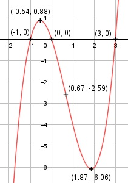

Aufgabe 24 f(x) = x3 - 2x2 - 3x f'(x) = 3x2 - 4x - 3, f''(x) = 6x - 4, f'''(x) = 6 Definitionsbereich: -∞ < x < ∞ Wertebereich: -∞ < f(x) < ∞ Asymptoten: - Symmetrie: - Nullstellen: x3 - 2x2 - 3x = 0 x * (3x2 - 3x - 3) = 0 x1 = 0 3x2 -2x - 3 = 0 p, q - Formel: p = -2, q = -3 x1,2 = x1,2 = 1 ± x1,2 = 1 ± x1,2 = 1 ± 2 x1 = 3 x2 = -1 N1(0|0), N2(3|0), N3(-1|0) Schnittpunkt mit der y-Achse: f(0) = 03 - 2 * 02 -3 * 0 = 0 Sy(0|0) Extrempunkte: 3x2 - 4x - 3 = 0 A, B, C - Formel: A = 3, B = -4, C = -3 x1,2 = x1,2 = x1,2 = 4 ± 7,21 x1,2 = ---------- 6 x1 = 1,87, f(1,87) = 1,873 - 2 * 1,872 - 3 * 1,87 = -6,06 x2 = -0,54, f(-0,54) = (-0,54)3 - 2*(-0,54)2 - 3*(-0,54) = = 0,88 f''(1,87) = 6 * 1,87 - 4 > 0 --> Tiefpunkt (1,87|-6,06) f''(-0,54) = 6 * (-0,54) - 4 < 0 --> Hochpunkt (-0,54|0,88) Wendepunkte: 6x - 4 = 0|+4 6x = 4 | :6 x = 2/3, f(2/3) = (2/3)3 - 2 * (2/3)2 - 3 * (2/3) = -2,59 f'''(2/3) ≠ 0 --> Wendepunkt (2/3|-2,59) Graph:
